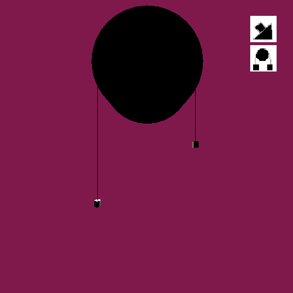
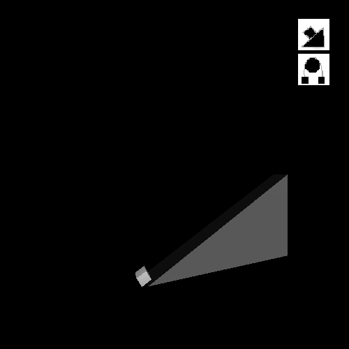
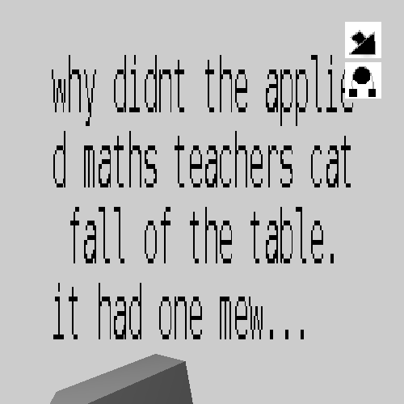
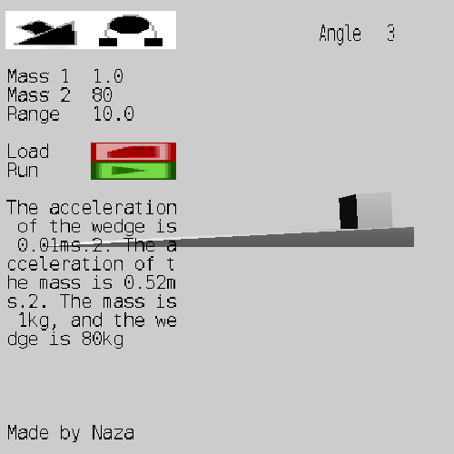

I will make a 3D simulation of connected particles. It should be able to simulate two fixed masses on a pulley, as well as one mass on a wedge. As a secondary goal, there should be a few ways to get unknown variables.
I need to:
I want to:
I'll start on tuesday the 9th of febuary, and I'll finish one week later, on tuesday the 16th of febuary.
If I have time, I'll
On day one I started by planning. I had to decide whether to make this project in javascript or with rust, but I ended up deciding to do it in rust. If I did this in javascript, I'd essentially just be porting in the equations and then drawing stuff, but doing it with my own engine will be more challenging. I really wanted to get the framebuffer working, and If I got to make my gui markdown, my engine would be 100x more powerful.
I then started making the meshes. They're fairly basic: the masses are spheres, the strings are composed of pentagonal prisms and the pully is just a slightly modified cylinder.
After making the masses I wanted to create a python script that would export the current mesh into the .obj file format, then execute a converter program that would turn the .obj model into my itermediate file format. To do this, I thought that I needed to install pip, and then install bpy (the blender python api). This didn't work, and I didn't find a solution. Luckily for me, blender actually has an inbuilt python console with bpy ready to use. Thus I could write the function.
Then I made the state machine for the simulation. It's more complex than the state machine for the chemistry experiment, but I'll try get it all done.
I then started loading the meshes into the engine. First I just added another state to a program I had already where I'd made two physics simulations, cognates of which are on this site. I tried to render them at the origin point, though they were nowhere to be seen. I tried rendering a quad, and that worked so I knew that the error was model realted. After some time, I used the blender GUI interface to export the pulley model to the .obj file format, then I went to the terminal to export the .obj file to my intermediate format and lo, my pulley was right there. So, I then knew that the script was the problem. I'll debug it later, as I don't intend on making more models. I'll just use the GUI and proceed.
Convex Mirror Simulation
Mass Dropping Simulation
At 12 AM on wednesday, I planned out the layout of the pulley simulation. I wanted it scale depending on the range of the falling mass like how my projectile simulation scales depending on the projectile's range. So, I had to design a positioning system that worked in terms of the range. I whipped out the most important tool for any programmer, pen and paper, and I got to work. First I decided that the masses would be displaced away from the vertical origin line by the radius of the pulley. Then I decided that the pulley would always be three quarters up the screen. The scale of the whole screen would be three times the range, where the bottom part would be taken up by the falling particle, the middle part would be where the masses start and the top part would be where the pulley would stay.
I then set out to program the rising and falling masses.
I would find the acceleration of the masses using the methods I learned in applied maths.
The formula turns out to be: (m1 - m2) / (m1 + m2).
I would then use this formula to get the displacement.
The displacement would be added to the rising mass' y coordinate and subtracted from the falling mass' y coordinate.
Then I added lines for added realism. Originally, the line segment mesh was pointing upwards. I intended to actually construct lines using multiple segmeents and have them roll over the pulley, so having them facing this way would make them easy to attach to the origin of the masses. However, this was superflous. All I needed to do was have two downwards pointing segments on either side of the pulley. As the rising pulley went up, I would shrink its line and as the falling pully went down, I would increase the scale of its own line too.

The next thing I'd need to add was interactability, in the form of command line arguments.
I planned out the layout for the wedge simulation. Where the pulley simulation was based on range, the wedge simulation would be based on the maximum distance between the mass and the wedge. I would calculate this range simply by combining their displacements. I would then focus the camera on the position of the mass (which is to the left of the wedge) plus half the distance between them. The angle of the camera fustrum is set to 45 degrees, so I can set the displacement of the camera just above half the distance between the mass and the wedge and they will both be included on the screen.
I implemented the wedge simulation. It took some time to get the wedge to appear as if it was sliding down the wedge. Reaching this point was nice, but I wanted to check wherther my simulations actually mapped to anything in reality. Turns out they didn't. It's like Rutherford says: there's actual physics, and there's stamp collecting. I was stamp collecting. I couldn't get consistent values for the acceleration of the mass or the wedge on paper, so I just went to bed and decided to continue on thursday. My sanity was waning and everything just seemed like a number on a page, none more correct than the other.
I went back to basics to debug the wedge simulation. I would calculate the acceleration of the wedge and the acceleration of the mass, when their masses were both 1kg, and the angle of the wedge was 45 degrees. I did the calculations on paper, and my value for the acceleration of the wedge matched the simulation, but my value for the acceleration of the mass differed.
So it appears as though I made an algebraic error. It was a simple sign mistake, when getting the acceleration of the mass in terms of g and a (the acceleration of the wedge). But then the acceleration of the mass was 9.8 ms-2, which was a bit suspect. I just chocked it down to the absence of friction, as the results of the simulation agreed with the maths on paper.
Comic on troubleshooting in applied maths
Then I tried to verify the simulation when the mass of the wedge and the mass were 1kg, and the angle was 30 degrees.
And while doing this on paper, I realised the crux of the error.
I wasn't accounting for the fact that the reaction force on the wedge is at an angle.
First I though that the this would imply that the force of the wedge would be RSin(90-A), but it turns out that it's just RSinA.
After implementing this fix, the code worked well enough, and was representative of what you would get if you did the equations yourself.
Now, as for that thing called the real world...
I choose to ignore it.
I then made the camera focus around the resting place of the mass.
The equation for the focal point looks something like (mass_displacement * 2.0 + wedge_displacement) / 3.0.
Then I made it so that once the mass hit the ground, the simulation would appear to stop. First I derived a simple equation to get the time taken to achieve any displacement. Then I calculated the time it would take for the mass to reach the bottom of the wedge. Then, I made sure that if the time elapsed was greater than the time the mass would take to reach the bottom, subsequent equations of motion would stop using new times.
Along the line, I also enabled passing varaiables on the command line to the simulation. I figured that I could save alot of time if I didn't have to recompile the program every time I wanted to change a variable.
I added a bit of flair to the pulley simulation by making the pulley spin. All I had to do was use the equation for radians to get the angle the pulley would have rotated through given the displacement of the masses.
I sorted out the lighting. I basically just copied the code from learnopengl.com.

I made input work. At first I wanted to use the glfw function for getting key names, but that gave me a segfault for some reason. I just made a function in the engine for getting the string version of a key, and used this instead. Other than making the stringification function, I didn't have to change the engine. All I had to do was capture any printable keys and append their string versions to a textbox.

On this day I made the markup language for gui elements. The initail idea was that you would define the rows of a 'pane', and each pane would contain gui elements, though would add more capabilities as the need arose.
The markup language used the file format that I'd created already, which was very similar to JSON.
It was composed of 'lists', which can contain other 'lists' or values.
Lists could be tagged with a name and/or a type.
Names allowed lists to be loaded, well, by name.
Having types meant that the language facilitated data classification.
A fully speced out looked like this: Name [ : Type Content... ].
The content consisted of whitespace separated strings, numbers, and/or other lists.
When a list contains another list, the interior list can be thought of as a member of a struct or a class.
The first iteration of the pane renderer could only render rows with equal heights, but I ended up changing the markup language to allow for variability.
The GUI elements in my engine contain the element's position, scale, and content. I only stored the content of each gui element in a pane, and not the position or the scale. The position and the scale corresponding to each bit of loaded content in the pane would be generated according to an algorithm that's similar to the algorithm I used to render text. It goes something like this:
There was a fair bit of debugging in order before I started trasfering the gui to the markup langauge. Some of it entailed fighting rust's borrow checker, as you do, and some of it involved the stupid mistakes I made along the way. For example, at one point, I calculated the number of elements in each row by finding the sum of the loaded lists. However, the height parameter was its own list, so a list with two elements and a defined height would appear as a list with three elements. This caused a good few problems, like array out of bound errors and incorrectly calculated positions and scales.
As I did port the gui over to the markup language, I realised that I had to add fixed height text if my bitmap text was to look even mildly good when rendered out. Up to this point, I allowed the number of columns to be fixed. After the number of characters exceeded the column count of a text area, the horizontal scale of each glyph in the text area would be reduced and a new line would be created. This didn't play well with the height system in the markup language, which enabled rows to be resized regardless of their content. I just had to introduce a 'rows' variable and then take this into acount when rendering, by rendering an amount of characters which was the number of rows * the number of columns.
As I said earlier, my input boxes were just text boxes, whose contents I mutated. Thus, repeated this pattern when adding the 'input boxes' in the markup language. I just added text named text elements. I would store the text element last clicked and then any subsequent printable keystrokes would be appended to the selected text area. With that done, I had input boxes for all of the simulatio variables, and the minimum viable product was done.

I implemented framebuffers in a c project. I copied the code into rust and it didn't work, so I gave up.
I implemented data serialisation. Conceptually, it isn't a hard idea to grasp, but I had trouble finding out how to go about doing it. First I just treated float pointers as characters. I presumed that characters were 8 bytes on rust but they're actuall unicode somethings that represent.. stuff. So that didn't work. I got gobledegook when I printed out the characters, which I expected, but I was unable to read it as valid floats. I eventually found out that there was a way to write bytes directly to a file, and this is what I ended up using. I just put some metadata at the start of the file saying how many vertices there are, then I loaded x number of vertices and the remainder of the file I treated as indices.
I only got the bare minimum done on this project. It can't calculate unknown variables, it doesn't show the forces acting on the bodies and I couldn't get the framebuffer to work.
I need to learn about code safety and speed, things which are important when you're doing filereading, and input.
It would be cool to have command line utilities for simulations, e.g calculate wedge-acceleration --angle 30 --wedge-mass 2.0 --mass 3.0.
The gui, though more capable, still looks crap. If I can get round borders, freetype glyphs, text wrapping, dimming when you hover the mouse over a button and high quality icons, I'll be happy. Or I could just use GTK...